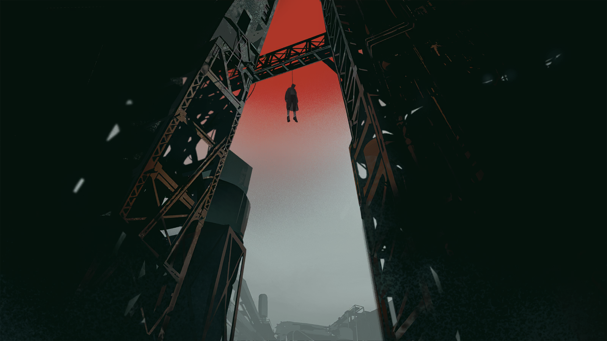
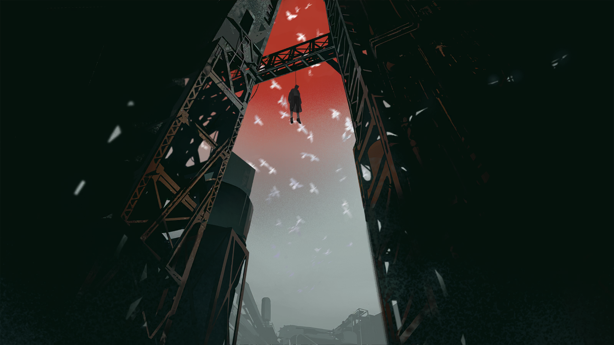

疲倦的声音
……要是在这里再找不到什么消息，就只能去南边的奥姆斯卡碰运气了。
疲倦的声音
唉，真不想去移动城市里头。人又多又吵，还到处都是集团军的眼线。
疲倦的声音
而且我跟你说。我把“利沃诺夫号”炸了，叶甫根尼那傻冒迟早是要来报复的。
疲倦的声音
也许，我就不该想着去找他们……
疑惑的迅驮兽
（喷鼻声）

斯乔帕
怎么，饿了？不过确实，你也好长时间都没歇脚了吧？只是我看这附近也没什么——哦。

斯乔帕
喏，那边上有条小溪，听见没？这响声，里头应该是没结冰的活水，先喝点去，垫垫肚子。
疑惑的迅驮兽
咴？

斯乔帕
嗯。然后等我一会儿……
斯乔帕
一会儿就好。

斯乔帕
……

酒馆老板
要点什么？
斯乔帕
有什么能吃的？
酒馆老板
列巴，土豆，麦酒，还有点自家酿的克瓦斯。都是我们自己也吃的东西，放心好了。
斯乔帕
你们还酿克瓦斯？
酒馆老板
怎么，不行？
斯乔帕
没。你刚才说的东西，都来一份。
酒馆老板
行。但最近年景不好，收不了别的，我们只收金——
斯乔帕
我懂。但那玩意儿叮叮当当的带着实在太重，你拿这个吧。不仅能换钱，用得好说不定还能让你的孩子不被送上战场。
酒馆老板
……
一枚银色的勋章被掏出来搁在木桌上。话语间，似乎尤嫌不够，斯乔帕把它转了个方向，往前又送了送。
酒馆老板
……你还想要什么？
斯乔帕
很熟练嘛，看来我的记忆没出错。

斯乔帕
要过河到奥姆斯卡枢纽，基本都要路过这里。因为河上唯一一座没被天灾摧毁，也没被火炮炸掉的桥，就在附近。
斯乔帕
伙计，我也不想为难你。我只想问问，最近这一两个月，有没有其他当兵的人来过这？
酒馆老板
你是说你这样的，还是——
斯乔帕
都行。
酒馆老板
那些黑虫子，其实最近来得少了。不过我们镇上从来都没什么感染者，想来也只是恢复了正常。
酒馆老板
但当兵的……最近都还经常有那种底盘很低的载具开进来，下来的都是一些穿着板正衣服的年轻人。他们进来喝点吃点，也就离开了。
斯乔帕
你说的载具，是不是轮廓很高很大，像纠察队用来拉感染者的牵引车？
酒馆老板
对，但底盘很低。在雪地上跟在贴地滑行似的。

斯乔帕
辎重车。
酒馆老板
什么？
斯乔帕
没什么。你还没说完吧，纠察队、正规军……还有那些像我这样的呢？
酒馆老板
来过。

斯乔帕
——！
酒馆老板
我见过一次，就一次。但他们没吃什么，就喝了点克瓦斯，也跟你似的觉得奇怪。
酒馆老板
但那模样，瞧着也都只是一群年轻人啊。
斯乔帕
大概什么时候？你知道他们离开后去哪儿了吗？
酒馆老板
这我怎么知道？时候嘛，至少是一个月之前了。
酒馆老板
不过，我确实听到过他们商量去向，只是没个定论。有的人说回去，有的人说去北边。
酒馆老板
现在这时候去北边，那不是找死吗？又不是被流放了只能过去，何必自讨苦吃？
酒馆老板
而且他们还提到个什么，“泽姆利亚”？……乌萨斯有这么个地方吗？

斯乔帕
……那是……
斯乔帕
没有。乌萨斯没有叫这个名字的地方。
酒馆老板
唉。我知道的就是这些了。你坐下歇会儿吧，看你裤子鞋子都磨成那样了，估计也是走了好远的路过来的。
斯乔帕
我有很好的旅行伙伴，他帮了我大忙。说到这个，您能不能再找点干草给我？
斯乔帕
……
“泽姆利亚”……泽姆利亚。
上次听见这个词，已经是多久之前了？它不存在于这片大地上的任何地方，实在没太多人会知道。
知道的，有人说它是土地的意思。可不被乌萨斯人接纳的自由民，得不到这样的地方。
因此，在我们有限的想象里，人在哪里，泽姆利亚就延伸到哪里；人死在哪里，泽姆利亚就在哪里扎根。
我们的祖辈、我们的子女、我们自己，死后全都混进那片土地里，白色的、灰色的，压实了，做成砖墙，就是老祖母来了，恐怕也没法分开。
因为这就是自由民的命运。“土地的疏远就是人的疏远，土地的哀恸就是人的哀恸。”我们身处其中，我们避无可避。
疑惑的迅驮兽
（跺脚）
疑惑的迅驮兽
（喷鼻）
斯乔帕
吃完了？吃完了咱们就继续走吧。
斯乔帕
想到北边，还有的是路程要赶呢。
话音落下，他看向被放在一旁围栏上用石块压住半边的报纸。
<b>“中央集团军挫败进攻计划，第四集团军遭受战略重创”</b>
风掀开报纸的首页，露出了这样的标题，而后是他没有耐心看完的下一页、再下一页——
不远处，庞大而陈旧的载具队伍缓缓驶进小镇的主干道。辎重车、运载车……种类齐全，几乎是要在附近长期驻扎的阵仗。
斯乔帕抬起头，看见车身上漆着的白色形状，辨认出那骏鹰徽记之下，飘扬的旗帜和倒置的矿镐。
他停下跨上坐骑的动作，转而握紧了腰间的刀柄。

斯乔帕
……哈。
随着车流的逼近，士兵们纷纷从运载车上翻身而下，将道路封锁。
风也慢慢停了下来，翻飞的报纸停留在了另一页。在那上面，当天的红字头条里这样写着——
<b>“第五集团军擅动，出兵占领奥姆斯卡”</b>

卡德尔
辛苦了，我们来送些药物。

整合运动战士
谢了，东西留在这，然后可以离开了。
卡德尔
伤员们情况怎么样？
整合运动战士
现在不是聊这些的时候，放下东西，赶快离开。

卡德尔
我以为我们现在算得上同胞。
整合运动战士
我只是听从命令，所有人都不许靠近。
视线越过眼前值守的战士，卡德尔看到了最大的那顶帐篷里灯火通明，隐约透出密集的人影。

卡德尔
是塔露拉她们在开会？
卡德尔
也许她们是在讨论之后的行军方向？我只是想知道我们接下来该去的地方。
整合运动战士
需要动身的时候，会通知所有人的。
卡德尔
……
卡德尔
我听说……我们的人在撤退的时候，还俘虏了一个乌萨斯的高级将领？
整合运动战士
嘿！别再问东问西的，回你该去的地方！

卡德尔
好好……没必要这么紧张。
卡德尔
同样是感染者……我们又能去哪呢？

米拉娜
……

九&塔露拉
……
沉默的青年
……

西尔卡
你们还不相信？

九
……从他被我们抓住开始，就一个字都不肯说。我们真的有办法可以确定他的身份？

西尔卡
他自己倒是完全换了套平民的打扮，但那几个侍从随身带的用具的确是宫廷里的，我认得出来。

九
你以前见过他？

西尔卡
军中到处都是他的画像，在宫廷画匠笔下的形象，比本人看上去要威风很多。

西尔卡
可是这的确能印证我们听到的圣骏堡事变的传闻，而且这也能解释第一集团军为什么会有那些奇怪的动作。
西尔卡
只是我完全想不明白，中央集团军到底遭遇了什么样的溃败，才能让他流落到这种地方？
九
现在的问题是，我们到底还有什么办法能撬开这位大人的嘴？

塔露拉
……起来。

九
塔露拉？

塔露拉
……站起来！
沉默的青年
……
塔露拉
你以为你是谁，是在战场上战败被俘的将领吗？你的沉默哪有任何荣誉可言！
塔露拉
你现在面对的，是乌萨斯上千万受苦难的人民之中的几个人。

塔露拉
作为乌萨斯的皇帝，你连在乌萨斯的人民面前，承认自己身份的勇气都没有吗？！

塔露拉
别当一个懦夫……
塔露拉
……说出你的名字。
过了许久，沉默的青年终于开口。

费奥多尔
……费奥多尔·弗拉基米罗维奇·拉齐萨尔。

费奥多尔
我就是……乌萨斯的皇帝。

费奥多尔
是让无数人受苦受难……让乌萨斯凋敝至此的罪魁祸首。

费奥多尔
现在，你们可以审判我了。
塔露拉
……

米拉娜
在谈论对你的审判之前，我们需要你先回答我们的问题。
米拉娜
圣骏堡的确是沦陷了，是吗？

米拉娜
第二集团军背叛了圣骏堡，联合第四集团军一同击溃了中央集团军……这些消息，都是真的？
费奥多尔
……没错……
米拉娜
现在占领圣骏堡的人是谁？

费奥多尔
叶莉萨维塔·康斯坦丁诺夫娜·拉齐萨拉女大公，也就是，我的姑母……

费奥多尔
还有……乌萨斯的皇女，我的，姐姐……
西尔卡
什么……？乌萨斯什么时候有一位皇女？
米拉娜
没有军队随行，只带着几个随从流落到这里。
米拉娜
你的队伍是在护送你的过程中牺牲了？还有谁知道你的下落？

费奥多尔
……我不知道，我怎么会知道？如今乌萨斯多的是想让我死的人。
费奥多尔
我只知道他们是不会放弃的。他们总会找到我，早晚而已。
费奥多尔
而如果你们也想行使处决我的权力，那我建议你们，最好尽快。
塔露拉
……够了，不用再和这个人浪费口舌了。
米拉娜
塔露拉？

塔露拉
我最担心的情况还是发生了。
塔露拉
如果真的由集团军掌握了圣骏堡……
塔露拉
乌萨斯的下一场战争，也许就近在眼前了。

？？？
打扰了，同学，你在看什么呢？
？？？
这个图书室，是我们小组活动的地方，如果你喜欢这本书，可以登记借走它。

奥尔佳
……抱歉，老师让我来这里等他——我对这本书上的诗有些疑问。

？？？
噢，老师吗……我明白了。

马特维
我叫马特维，是大三的学生，如果有什么问题，也可以问我。

奥尔佳
谢谢，马特维。

奥尔佳
这首诗的开头，诗人说他记得那美妙的一瞬，他见到了自己的爱人，是“纯洁完美的化身”。
奥尔佳
但随着岁月流逝，一切都被诗人忘却了。他说空间与时间剥夺了眼泪、生命和爱情，连那位爱人的样子也变得模糊。

奥尔佳
我无法理解其中的变化，如果那是值得被不断回忆的美好与爱，为什么又会被诗人忘记呢？
马特维
……因为记忆是一场虚构，人们回忆某个人与某件事，往往不是随意的冲动，而是内心暗中做出的选择。
马特维
诗人明白，过去是被未来所规定的事物。他的爱人是什么样子，取决于他如何去回忆那位爱人。
马特维
而我们会是什么样子，也取决于未来的人们如何看待我们的一生——
？？？？
就好比，只有在一个胜利的时刻回头，人们才会看见牺牲的意义。
马特维
安托沙，你是什么时候到的？我都没发现。

安托沙
刚刚。

安托沙
这里可不是念念诗就能赚学分的地方，年轻的小姐。如果不是老师的推荐，我本不打算招收一个不参与劳动的贵族小姐。

安托沙
回答我——你是否相信，总有一天，我们可以消灭一切高高在上拥有特权的人，我们每个人都可以平等地享有一切权利？
奥尔佳
这句话似乎在叙述一个终点，乌萨斯，不，这片大地的终点……
奥尔佳
我不知道会不会有那一天。

马特维
等等安托沙，我们才第一天认识她——
奥尔佳
但是，希望——我相信希望。

奥尔佳
那是前人不曾到达的未来，我们从未见过的事物，就像在黑夜中摸索前路……
奥尔佳
如果内心时刻都在顾虑脚下的深渊，任何人都会跌落下去。

奥尔佳
正因如此，人的目光才要始终注视着终点——
奥尔佳
我将这称为“希望”。
安托沙
……
安托沙
欢迎加入彼得拉设夫斯基小组，奥尔佳，我在老师那边看过你的申请表了。
安托沙
等尤拉他们回来，我们再开这学期的第一个会议。

马特维
……很高兴认识你，奥尔佳。
马特维
这位是小组的建立者，安托沙。他说话的口气永远是这样，每个人都得过一阵子才能适应——

奥尔佳
……他醒了！

“雷尔金”
我看看——

“雷尔金”
……血已经完全止住了，好在没伤到要害。

安托沙
……你们……
他边说着，边想起身，巨大的疼痛与眩晕感顿时袭来，安托沙咬着牙，额头上冷汗直冒，身边的两人赶紧扶着他躺下。

“雷尔金”
说话的力气都没有，就别惦记着动了。
安托沙
……我还记得集团军打了上来，一枚炮弹在我不远处炸开了，然后——
安托沙
我在哪里？其他工人呢……

奥尔佳
这是我家族庄园的地下室，在罗德岛的帮助下，雷尔金把你从第五仓库那里背了回来。
安托沙
罗德岛……
奥尔佳
他们还帮忙带回了幸存工人，和一些被盯上的学生。这之后，阿洛伊泽小姐就带他们前往其他更隐蔽的据点了。
“雷尔金”
你要是想亲自感谢他们，就养好身体，之后再说吧。
安托沙
……
安托沙
你还是去战场了，“雷尔金”。
“雷尔金”
……嗯。

“雷尔金”
罢工的时候，我听说了集团军包围第五仓库的事，所以就……去看了看。
“雷尔金”
可这反而救了我。我离开罢工队伍没多久，第四集团军就用武力镇压了罢工——几乎所有工会的领袖都被抓了。
安托沙
……什么？

奥尔佳
抱歉，安托沙。

奥尔佳
此前得到的消息都指向两支集团军会一直驻留在城外，大家也都如此判断。它们彼此间摩擦不断，按理不会允许任何一方进城。

奥尔佳
但女大公不知道用了什么手段，让平衡被打破了。第四集团军弥补了警力不足的问题，而军队的动作十分迅猛……
安托沙
我们其他的同伴——现在都在哪！
“雷尔金”
……结束了，安托沙。

“雷尔金”
一切都结束了。

生锈的钢铁桁架，自大地的尽头拔起，像是一头裂兽的两颚，撕开了天空留下的伤口。
它捕获了一个猎物，它把猎物含在口中。
将凝的紫红血液顺着鞋尖落下，混杂着粉尘与烟草味道的铅色雾霭……它为失败者而调色。
是的，一位失败者，悬挂在无人可及的地方——这座城市献给主人的祭品。
高亢的咽喉已然枯萎，沉默涌入没有生机的耳朵，空洞的躯壳挂着油迹斑斑的棉袄，折叠的脖颈与绳索紧扣在一起。
半阖的双眼下，是液体流淌过的痕迹。
他不会看见，站在泥泞的雪地里的千百个身影。
既没有哭泣，也没有离去，只是排好了队伍，静静地等待。
等待叫到自己的工号。
等待他人划定的结局。

罗季昂
亚历山大·卡莱夫，我知道他的名字……也知道你们的名字。
罗季昂
我知道谁在夜里传阅那些报纸，也知道谁在角落里污蔑着琥珀宫的殿下。
罗季昂
这就是他们——那些煽动者、造谣者、“工会领袖”的下场。
罗季昂
你们可以选择，报告他们妖言惑众的话术和藏匿的地址。
罗季昂
也可以选择……成为下一个警示牌。
白色的羽兽，带来了风的低语——
它们在说，看呐，我触碰到了过去，像是一个沉重的钟摆。
它们在说，肿胀的齿轮仍会互相啃食。
直到嚼碎另一颗矿石、另一个名字，与另一段历史。